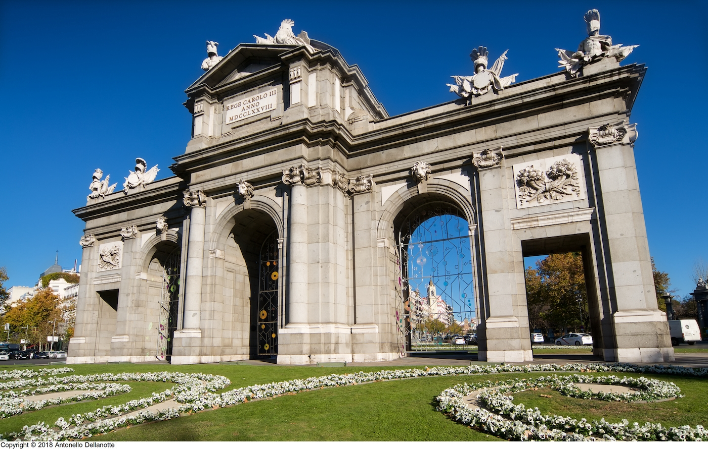

Monumentos reales

Puerta de Alcalá
Una de las cinco antiguas puertas reales que daban acceso a la ciudad, mandada construir por Carlos III.
Fue el primer arco de triunfo construido en Europa después del Imperio romano.

Palacio Real
Con más de 3.000 estancias, es el palacio real más grande de Europa Occidental y testimonio vivo de la historia de España.
Tiene más de 3.000 habitaciones, siendo uno de los palacios más grandes de Europa Occidental.